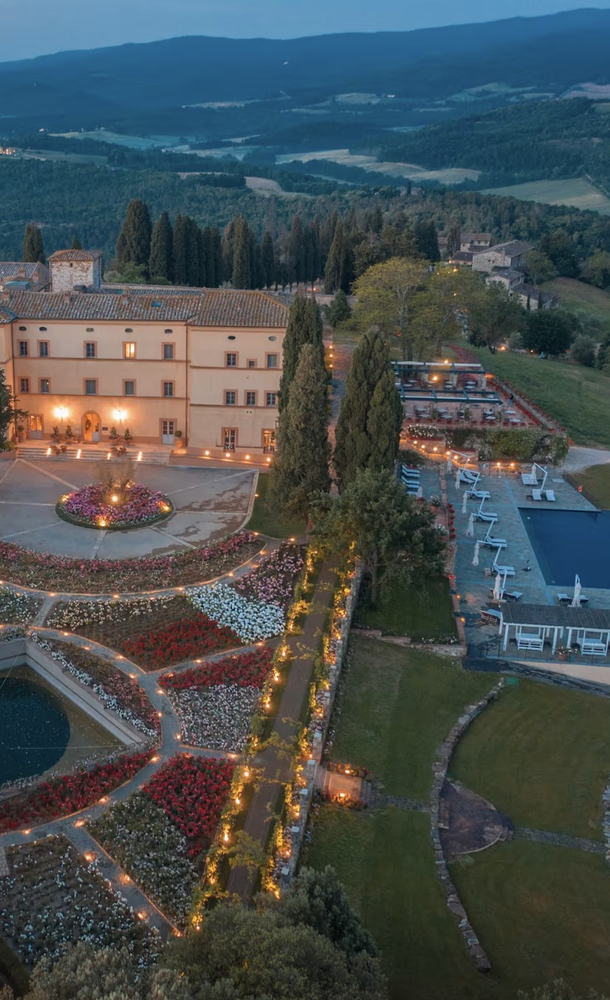

A hilltop castle estate near Siena with sweeping countryside views — slightly more traditional in feel.
My featured line on Castello di Casole is short and deliberate: a hilltop castle estate near Siena with sweeping countryside views, slightly more traditional in feel. Within my Tuscany trio, this is the one for travelers who want their estate to feel like a castle, because it is one.
The castello crowns its own hill above a huge private estate, with views that run unbroken to the horizon in every direction. Where Castiglion del Bosco reads polished and contemporary-rustic, Casole leans into stone, heritage, and the weight of its ten centuries — Belmond's specialty, done at full scale.
As a Belmond preferred partner, I book it on its own or as the countryside chapter of a Belmond Italy itinerary — Florence's Villa San Michele is barely an hour away.

A genuine hilltop castle. Ten centuries of stone crowning its own estate — the most castle-like of my featured Tuscany picks.
The sweeping views. Unbroken Tuscan countryside to every horizon — sunset from the terraces is the day's main event.
The Siena side of Tuscany. Casole d'Elsa puts Siena, San Gimignano, and Volterra all within easy reach.
Traditional in feel is the brief. Stone, heritage interiors, classic service — if you want contemporary polish, that's Castiglion del Bosco.
It's remote by design. Plan a car or driver — the isolation is the luxury, and the hill towns are the excursions.
Belmond pairs beautifully. An hour from Villa San Michele above Florence — the two-stop Belmond Tuscany trip writes itself.
A hilltop castle with sweeping views near Siena — for travelers who want their Tuscany slightly more traditional, this is the one.
Rates through me are identical to booking direct — the perks are not. As a Fora advisor, my clients receive a space-available upgrade, daily breakfast, and a hotel credit — plus my direct line to the team on property before and during your stay.
Check Availability